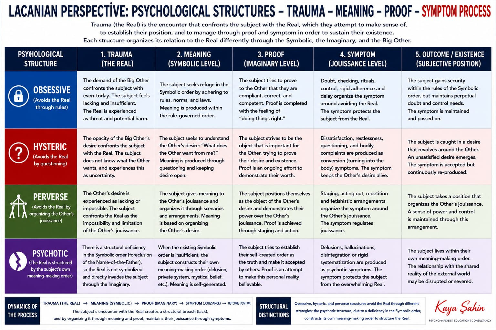

Imaginary
Images, identification, the ego, the gaze, rivalry, the body as a picture. Where the subject looks for proof.
RSI · Borromean knot
Lacan’s three registers are not layers of a mind. They are three ways experience is ordered. The charts mark them on every cycle: meaning is Symbolic, proof is Imaginary, trauma is Real. The sinthome is the fourth ring that can hold the three together.
Images, identification, the ego, the gaze, rivalry, the body as a picture. Where the subject looks for proof.
Language, law, kinship, the Name-of-the-Father, the Big Other. Where the subject looks for meaning.
What will not be imaged or said. Lack, jouissance, trauma, the leftover. Where the cycle meets the impossible.
A Borromean knot is three rings tied so that if one is cut, all three fall apart. That is the late-Lacan picture of a subject: Imaginary, Symbolic, and Real hold each other. No register is the “true” one underneath the others.
Psychosis, in this picture, is a failure of the Symbolic knot (foreclosure of the Name-of-the-Father). A sinthome can act as a fourth ring — Joyce’s writing is Lacan’s famous example — that restitches what the paternal metaphor did not hold.
| Stage | Register | Question | Failure mode |
|---|---|---|---|
| Meaning | Symbolic | What am I in language? | Meaning collapses, or hardens into dogma |
| Proof | Imaginary | How do I appear for the Other? | The ego lives only as a mirror |
| Trauma | Real | What cannot be covered? | Denial, flood, or endless delay |
| Symptom / formula | Knot of all three | How do I bind jouissance? | The bind becomes a prison |
| Sinthome | Fourth ring | How do I live this knot? | Fatigue if the knot is not fed |
The English process chart states the distinction cleanly:

See also the Turkish twin of this chart on the UML / process page, and the sinthome as the extra ring.